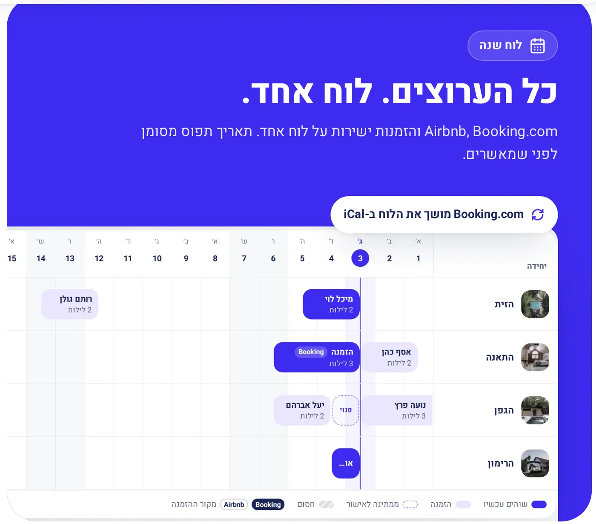
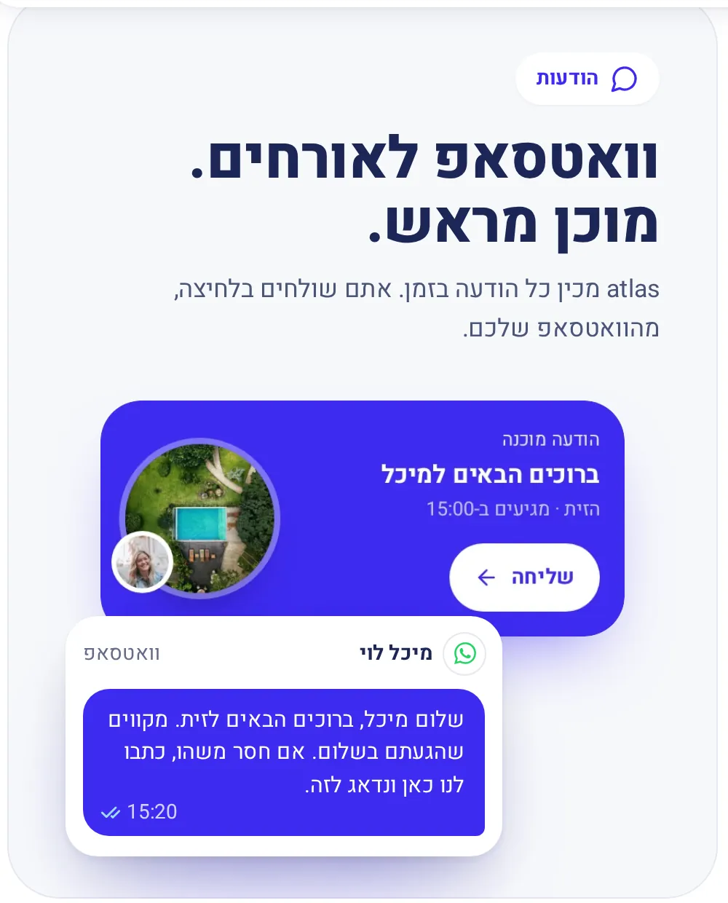
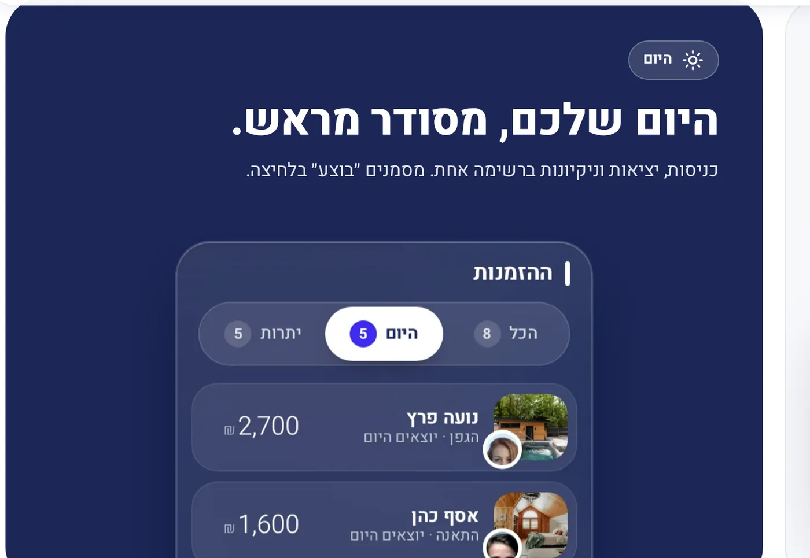
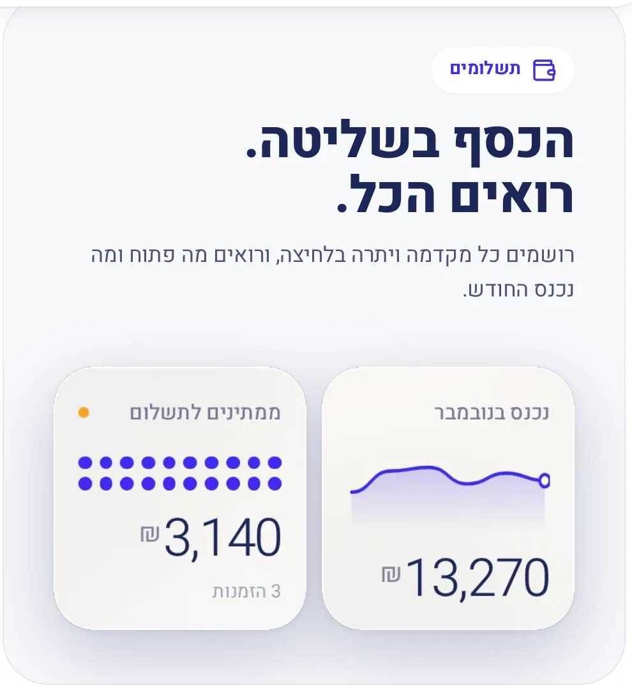
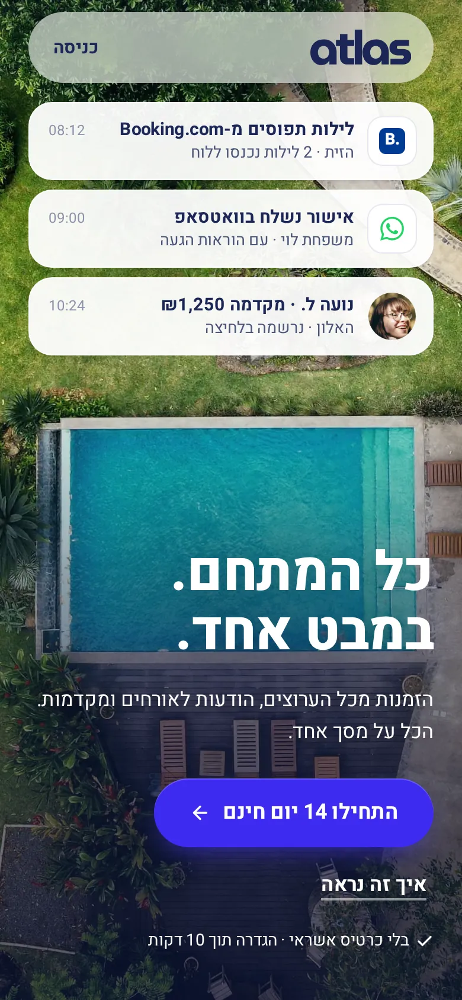
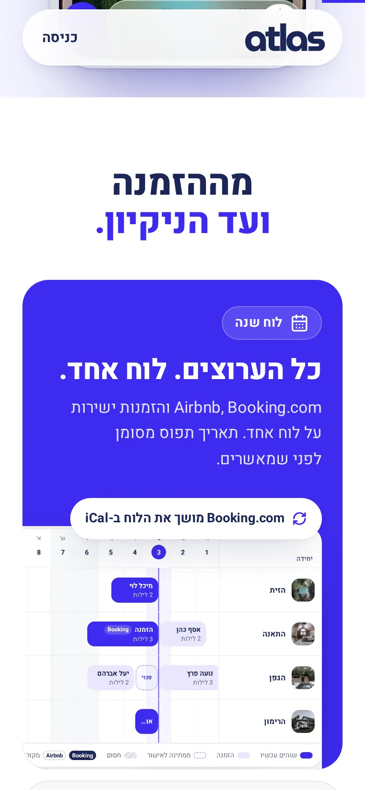

מערכת שבניתי · לבעלי צימרים ומתחמי נופש
atlas
לקחתי מערכת מסובכת והפכתי אותה לפשוטה.
01המטרה
לקחת מערכת שהפיתוח שלה נתקע, ולהפוך אותה למשהו שבעל צימר מבין לבד.
הזמנות, הודעות ויומן, במסך אחד שמרכז הכול.
02האפיון
- למי זה
- בעלי צימרים שמנהלים את המקום בעצמם. חלק מהם מבוגרים, ולא כולם מסתדרים עם מחשבים.
- מה היה צריך לפתור
- הזמנות מגיעות מ-Booking, מ-Airbnb ומהוואטסאפ. בלי מקום אחד שמרכז אותן, קל לקבל שתי הזמנות לאותו לילה.
- מה אסור היה לשבור
- כל מסך ברור תוך שנייה. ולא להבטיח באתר שום דבר שהמערכת עוד לא עושה.
03ההחלטות
ההחלטות שעשו את ההבדל.
- 01
מסך 'היום' במקום לוח נתונים.
נכנסים ורואים מה קורה היום, ומה הדבר הבא לעשות.
- 02
הודעה לאורח מוכנה מראש, ונשלחת בלחיצה.
בעל המקום רואה את ההודעה לפני שהיא יוצאת.
- 03
בטלפון, ארבעה כפתורים בתחתית המסך.
היום, יומן, שיחות וכסף. כל השאר נמצא תחת 'עוד'.
04מה מיוחד כאן
פרטים שכדאי לראות מקרוב.

כל ההזמנות בלוח אחד
Booking ו-Airbnb באותו לוח. תאריך תפוס מסומן לפני שמאשרים.

הודעה לאורח, מוכנה מראש
ההודעה מוכנה בזמן, ונשלחת בלחיצה מהוואטסאפ של בעל המקום.

היום, ברשימה אחת
כניסות, יציאות וניקיונות, עם סימון 'בוצע' לכל שורה.

מה נכנס ומה עוד פתוח
כל תשלום ומקדמה במקום אחד. רואים מה שולם ומה מחכה.


הצעד הבא
רוצים אתר שמסביר את העסק שלכם ככה?
מדברים ישירות איתי. מענה בוואטסאפ 24/7.